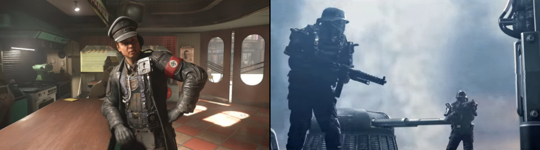

William Joseph ‘B.J.’ Blazkowicz, the main protagonist of the Wolfenstein series of alternative history video games, is back in Wolfenstein II: The New Colossus. Set in America in 1961, ‘The New Colossus’ will take BJ (nicknamed ‘Terror-Billy’ by the Nazis) from post-nuclear-attack Manhattan via small-town Roswell to the bayous and boulevards of New Orleans and beyond, as he leads the resistance against the Nazi occupation of his beloved country.
After barely surviving the assassination of Nazi General Deathshead at the end of ‘Wolfenstein: The New Order’, BJ begins his new adventure while still recovering from his extensive injuries. Bloodied but unbowed, he soon finds himself fully recovered and stronger than ever. Along the way, BJ will mow down anyone in his path using an extensive arsenal of high-tech weaponry, including the Laserkraftwerk (laser-based weapons) or the Dieselkraftwerk (fuel-powered grenades). BJ can also get up close and personal with his enemies using the new hatchet – because there’s nothing more satisfying than plunging a sharp axe into the brittle cranium of an unsuspecting Nazi commandant.
Whatever weapons he chooses to use, BJ can not only dual-wield anything from advanced pistols to submachine guns (or any other combo of his powerful armaments), but he can upgrade those weapons as well – allowing for even bigger versatility when he engages in his favourite pastime: killing vile Nazis.
But ‘The New Colossus’ isn’t just the tale of one man’s mission to rid USA of the foul sowers of the evil ideology that’s overtaken his nation. BJ this time fights to take back his homeland alongside his old friends (including returning favourites like Caroline, Bombate, Set, Max Hass, Fergus and Wyatt, as well as his now-pregnant partner Anya). These allies – along with new characters like Horton and Grace – will help BJ take down the villainous Frau Engel and her Nazi army, in the process sparking the second American Revolution, and ensuring there’s a future for the growing Blazkowicz family.
Wolfenstein II: The New Colossus puts you into the Nazi-stomping boots of BJ Blazkowicz and lets you unleash your inner resistance fighter. Whether you like to sneak around, run-and-gun, take a tactical approach – or prefer combination of all of the above – your goal remains the same: rally the opposition and end the Nazis’ tyrannical reign in America.
The sequel to the critically acclaimed first-person shooter series from MachineGames, a Swedish video game developing studio responsible also for the previous two titles in the series: Wolfenstein: The New Order and Wolfenstein: The Old Blood, was announced by Bethesda at the E3 2017, and will be available from 27 October 2017 on PlayStation 4, Xbox One and PC Windows platforms.